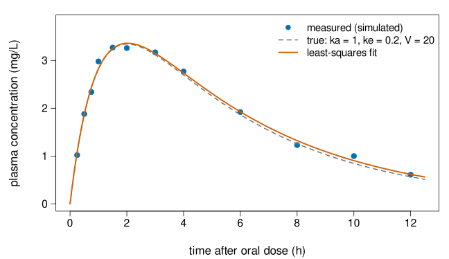
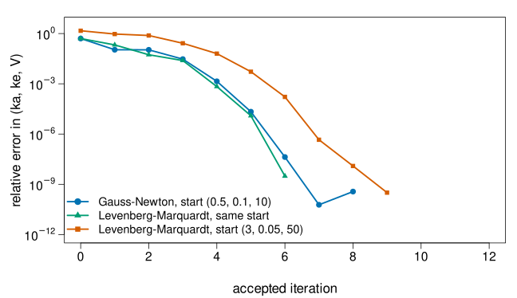
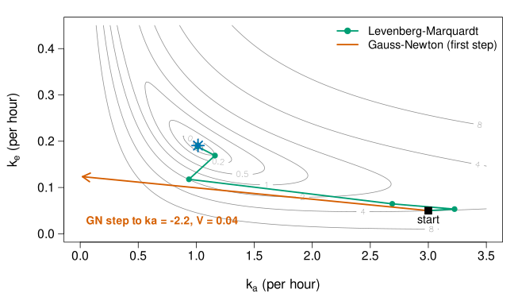
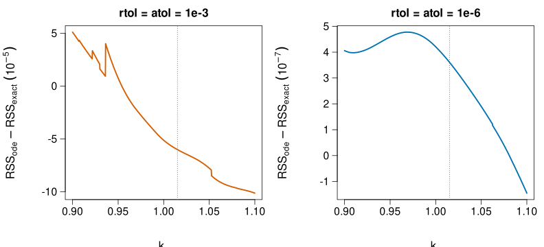
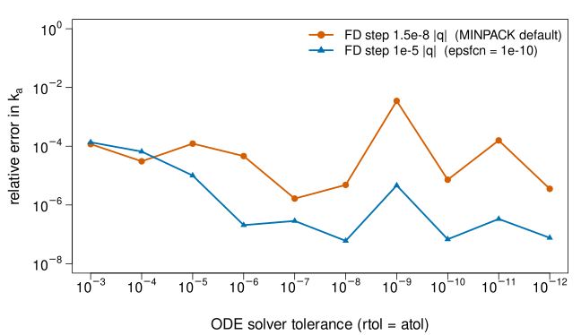
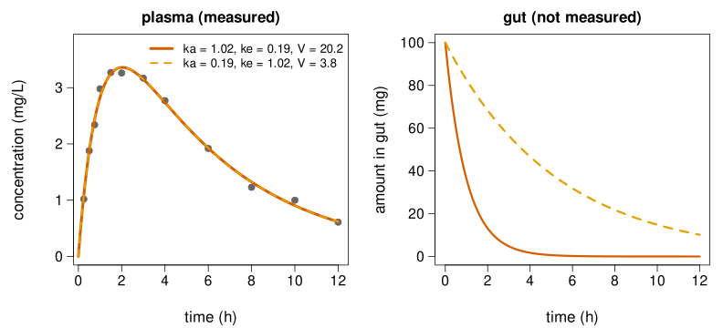

Fitting a model to data means choosing parameters that make the residuals small. When the model is nonlinear in its parameters (a rate inside an exponential), lm cannot do it and there is no formula: we iterate.
Gauss–Newton: linearise the model, solve one linear least-squares problem per step (by QR), repeat. Fast near the answer, wild far from it.
Levenberg–Marquardt: damped Gauss–Newton, sliding between Gauss–Newton and gradient descent. What minpack.lm::nlsLM and scipy.optimize.least_squares use.
Practicalities: nls and its “singular gradient”, log-parameters for positive rates, multistart.
ODE models: the ODE solver sits inside the residual function. Its tolerance and the finite-difference step must fit together.
Biology: a drug taken orally. From 12 plasma samples, estimate the absorption rate, the elimination rate and the volume of distribution.
A biology problem first: a drug in plasma

One oral dose D = 100 mg. Plasma sampled 12 times over 12 hours.
Questions: how fast is the drug absorbed (k_a), how fast eliminated (k_e), and in what volume (V) does it distribute? These decide the dosing schedule.
The data are simulated from k_a = 1/h, k_e = 0.2/h, V = 20 L, plus noise with SD 0.1 mg/L, so we know the truth.
The model: an ODE with a closed form
Amount in gut A_g, in the central compartment (plasma) A_c:
A_g' = -k_a A_g, \qquad A_c' = k_a A_g - k_e A_c
A_g(0) = D, A_c(0) = 0, and we measure C = A_c / V.
RSS over (k_a, k_e), with V at its best value for each pair.
A curved valley, two minima with the same RSS (stars), and a line k_a = k_e where the formula is 0/0.
A start in the wrong place can end in the wrong minimum. We come back to this at the end.
Recap: linear least squares by QR
For a linear model A\mathbf x \approx \mathbf b (unit Least squares: normal equations vs QR):
minimise \|\mathbf b - A\mathbf x\|^2; factor A = QR and back-substitute R\mathbf x = Q^T\mathbf b. In R: qr.solve(A, b).
The normal equations A^TA\mathbf x = A^T\mathbf b give the same \mathbf x in exact arithmetic, but square the condition number: \kappa(A^TA) = \kappa(A)^2.
And from Newton for systems of equations: the JacobianJ_{ij} = \partial m_i / \partial p_j is the matrix of slopes, and
Column 1: raising k_a raises early concentrations and lowers late ones (faster in, faster gone).
Column 2: raising k_e lowers everything, most at 12 h. Column 3: raising V dilutes.
Step h = 10^{-7}\,p_j is relative to each parameter, as in Newton for systems of equations.
The Gauss–Newton step
Replace the model by its linearisation and minimise the RSS of that:
\min_{\boldsymbol\delta}\ \|\mathbf r - J\boldsymbol\delta\|^2, \qquad \mathbf r = \mathbf y - \mathbf m(\mathbf p_k), \qquad \mathbf p_{k+1} = \mathbf p_k + \boldsymbol\delta
A linear least-squares problem with design matrix J (12 × 3) and data \mathbf r: solve it by QR.
r <- y -model(c(0.5, 0.1, 10))qr.solve(J, r) # delta# [1] 0.35245282 -0.01478552 8.03484167
In the normal-equation form, J^TJ\,\boldsymbol\delta = J^T\mathbf r. Same \boldsymbol\delta here, but at the minimum \kappa(J) = 170 while \kappa(J^TJ) = 2.9\times10^4: QR keeps 2 more digits.
Compare Newton for systems of equations: there J was square and we solved J\boldsymbol\delta = -\mathbf F. Here J is tall and we solve in the least-squares sense.
One Gauss–Newton step by hand
One parameter: after an IV bolus, C(t) = 10\,e^{-kt}. Data t = 1, 2, 4 h: y = 6.0,\ 3.7,\ 1.3 mg/L. Start k_0 = 0.3.
t
m = 10e^{-0.3t}
J = -10\,t\,e^{-0.3t}
r = y - m
1
7.408
−7.408
−1.408
2
5.488
−10.976
−1.788
4
3.012
−12.048
−1.712
With one column, the least-squares solution is a ratio:
RSS: 8.11 → 0.285. Next steps: 0.5021, 0.504413, 0.5044173 (the minimum).
Gauss–Newton in R
gauss_newton <-function(p, maxit =30, tol =1e-8) {for (k in1:maxit) { r <- y -model(p) delta <-qr.solve(jac(p), r) # linear least squares by QR p <- p + deltacat(sprintf("%2d %10.6f %10.6f %10.4f %12.8f\n", k, p[1], p[2], p[3], sum((y -model(p))^2)))if (sqrt(sum(delta^2)) < tol *sqrt(sum(p^2))) break } p}p_hat <-gauss_newton(c(0.5, 0.1, 10))
Two more iterations change nothing visible: \hat k_a = 1.0151, \hat k_e = 0.1906, \hat V = 20.216, RSS 0.0665.
nls is Gauss–Newton
fit <-nls(y ~bateman(tt, ka, ke, V), start =list(ka =0.5, ke =0.1, V =10),trace =TRUE)# 93.53426 (2.65e+01): par = (0.5 0.1 10)# 15.91084 (1.43e+01): par = (0.8524528 0.08521448 18.03484)# 0.9774509 (3.57e+00): par = (1.124562 0.1284276 22.37571)# 0.09134723 (6.10e-01): par = (1.056583 0.1763063 20.81648)# 0.06656857 (3.89e-02): par = (1.016284 0.1897946 20.24476)# 0.06646745 (3.05e-04): par = (1.015102 0.1906071 20.21665)# 0.06646744 (1.67e-06): par = (1.015072 0.1906157 20.21621)
Exactly our iterates. nls uses Gauss–Newton with a QR solve and a numerical Jacobian, plus step halving if the RSS goes up.
The number in brackets is its convergence criterion (the size of the predicted RSS decrease); it stops below 10^{-5}.
How fast? Gauss–Newton is almost Newton

Newton for minimising RSS needs the Hessian 2\left(J^TJ - \sum_i r_i \nabla^2 m_i\right). Gauss–Newton drops the second term: it needs only first derivatives.
Small residuals (good fit) or a nearly linear model → the dropped term is small → convergence close to quadratic. Large residuals → only linear convergence.
Failure: Gauss–Newton from a bad start
Start \mathbf p_0 = (3, 0.05, 50): fast absorption, very slow elimination, large volume. RSS 9.5.
p0 <-c(3, 0.05, 50)p1 <- p0 +qr.solve(jac(p0), y -model(p0)); p1 # one Gauss-Newton step# [1] -2.22468806 0.17865474 0.04427022sum((y -model(p1))^2)# [1] 6.742435e+29nls(y ~bateman(tt, ka, ke, V), start =list(ka =3, ke =0.05, V =50))# Error in nls(y ~ bateman(tt, ka, ke, V), start = list(ka = 3, ke = 0.05, :# singular gradient
The linearisation is only good near\mathbf p_0; the full step goes far outside: a negative absorption rate and a volume of 44 mL.
nls evaluates the Jacobian at that point, finds it numerically rank deficient (\kappa \approx 10^{12}) and stops: “singular gradient”.
Still a linear least-squares problem, 3 rows taller: solve by QR. (D_g = diagonal of column lengths of J, Marquardt’s scaling, so the units of V do not matter.)
\lambda \to 0: the Gauss–Newton step. \lambda large: \boldsymbol\delta \approx D_g^{-2}J^T\mathbf r/\lambda, a short step downhill (-J^T\mathbf r is half the gradient of the RSS): gradient descent.
Rule: if the RSS went down, accept and divide \lambda by 10; if up, reject and multiply \lambda by 10.
Levenberg–Marquardt in R
lev_mar <-function(p, lambda =0.01, maxit =200, tol =1e-8) { rss <-sum((y -model(p))^2)for (k in1:maxit) { J <-jac(p); r <- y -model(p) Dg <-diag(sqrt(colSums(J^2))) # Marquardt's scaling delta <-qr.solve(rbind(J, sqrt(lambda) * Dg), c(r, 0, 0, 0)) rss_new <-sum((y -model(p + delta))^2)if (is.finite(rss_new) && rss_new < rss) { # accept: trust the linear model more p <- p + delta; rss <- rss_new; lambda <- lambda /10if (sqrt(sum(delta^2)) < tol *sqrt(sum(p^2))) break } else lambda <- lambda *10# reject: shorter, more downhill step } p}
From (3, 0.05, 50): 15 passes, 10 steps accepted, 5 rejected (the first two among them); ends at (1.0151, 0.1906, 20.216).
The two paths

Gauss–Newton (orange) jumps out of the region where the model makes sense.
Levenberg–Marquardt (green) first takes short downhill steps along the valley, then Gauss–Newton steps: error curve in orange on the convergence plot.
The library versions
library(minpack.lm)fit <-nlsLM(y ~bateman(tt, ka, ke, V), start =list(ka =3, ke =0.05, V =50))coef(fit)# ka ke V# 1.0150722 0.1906157 20.2162105
nlsLM has the nls interface but uses MINPACK’s Levenberg–Marquardt; nls.lm takes a residual function instead of a formula.
Python: scipy.optimize.curve_fit (LM by default) and least_squares (trust region by default, method="lm" for MINPACK). Rust: nalgebra + 40 hand-written lines (exercise).
Same answer as nls when both converge. LM converges from more starts, not from all.
Positive rates: fit the logarithms
Rates and volumes must be positive. Fit \mathbf q = \log\mathbf p and use k_a = e^{q_1}, …:
Not a cure-all: plain Gauss–Newton in logs from (3, 0.05, 50) still diverges (k_a \to 2\times10^{-4}, k_e \to 617). Damping is still needed.
Fitting an ODE model
Most models (saturable elimination, viral dynamics, gene circuits) have no closed form. Then the residual function solves the ODE:
library(deSolve)pk_rhs <-function(t, A, p) list(c(-p[1] * A[1], # gut p[1] * A[1] - p[2] * A[2])) # central compartmentpk_ode <-function(p, tol =1e-10) { out <-ode(c(D, 0), c(0, tt), pk_rhs, p, rtol = tol, atol = tol) out[-1, 3] / p[3] # amount in the central compartment / V}resid <-function(q, ...) y -pk_ode(exp(q), ...)fit <-nls.lm(log(c(0.5, 0.1, 10)), fn = resid,control =nls.lm.control(epsfcn =1e-10))exp(fit$par)# [1] 1.0150721 0.1906157 20.2162095
Matches the closed-form fit to 7 digits. Cost: each residual = one ODE solve; each Jacobian = 3 more.
The optimiser sees the solver error

What the optimiser minimises is \text{RSS}_\text{exact}plus the solver error: smooth stretches with jumps where the solver changes its step sequence.
With rtol = atol = 1e-3 the error (10^{-4}) is as large as the RSS change from a 0.3 % change in k_a: the fitted k_a is wrong in the 4th digit, and the reported RSS (0.06641) is below the true minimum (0.06647).
Inner tolerance vs finite-difference step

The Jacobian is a difference quotient: solver error \varepsilon_\text{ode} divided by the step h. MINPACK’s default step 1.5\times10^{-8}|q| is tiny (here |q_1| = |\log k_a| = 0.015): the error jumps around whatever the tolerance.
Rule (from Convergence and cost): h \approx \sqrt{\varepsilon_\text{ode}}, and the solver tolerance 100–1000 times tighter than the accuracy you want from the fit. Then refit with a tighter tolerance and keep only the digits that agree.
36 starts over 2.5 orders of magnitude (log grid). 14 end at (1.02, 0.19, 20.2), 21 at (0.19, 1.02, 3.8), 1 runs off (k_a \to 10^{15}, RSS 64.5 = no model at all).
Always compare the RSS of the ends: a failed run has a much larger RSS. Here the two good ends have the same RSS: 0.06646744.
The flip-flop: two answers, one curve

Swap k_a \leftrightarrow k_e and set V' = V\,k_e/k_a: the Bateman function is exactly the same. Plasma data alone cannot tell “fast in, slow out” from “slow in, fast out”.
Pharmacology: flip-flop kinetics (e.g. slow-release tablets). Decide with other data (an IV dose gives k_e directly) or prior knowledge (V = 3.8 L is plasma volume only).
No optimiser fixes this: the parameters are not identifiable. Next unit.
Checklist: is my nonlinear fit trustworthy?
“singular gradient” / no convergence → better starts, log-parameters, or Levenberg–Marquardt (nlsLM, least_squares).
A parameter at a strange value (negative rate, 10^{15}, 10^{-27}) → the fit ran off; restart, reparameterise, or the data do not determine it.
Plot the fitted curve over the data, and the residuals against time: a systematic pattern means a wrong model, not a numerical problem.
Multistart: several local fits from a log grid; compare the RSS of the ends. Equal RSS at different parameters → non-identifiable.
ODE inside: set rtol/atol explicitly and tight (1e-8 to 1e-10); refit with 100× tighter tolerance; finite-difference step \gg solver error.
Stopping: ask for a tolerance above the accuracy of your Jacobian; read the convergence message.
Summary
Nonlinear least squares: minimise \sum_i (y_i - m_i(\mathbf p))^2 when \mathbf p enters nonlinearly. No formula: iterate.
Gauss–Newton: linearise, \mathbf m(\mathbf p + \boldsymbol\delta) \approx \mathbf m + J\boldsymbol\delta, then one linear least-squares solve per step, by QR. Nearly quadratic near a good fit; can jump far away from a bad start. nls is Gauss–Newton with step halving (“singular gradient”).
Levenberg–Marquardt: add \lambda\|D_g\boldsymbol\delta\|^2; \lambda small = Gauss–Newton, \lambda large = gradient descent. nlsLM, nls.lm, curve_fit, least_squares.
Log-parameters for positive rates: positivity for free, better conditioning (170 → 8.7).
ODE fitting: the solver runs inside the residual; its error is part of the objective. Tight tolerance, a finite-difference step well above the solver error, refit to check.
Multistart finds several minima; the PK model has two with equal RSS (flip-flop).
Next:Identifiability and uncertainty of fitted parameters: which parameters the data determine, and how well.